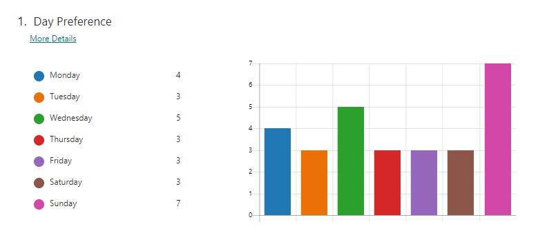
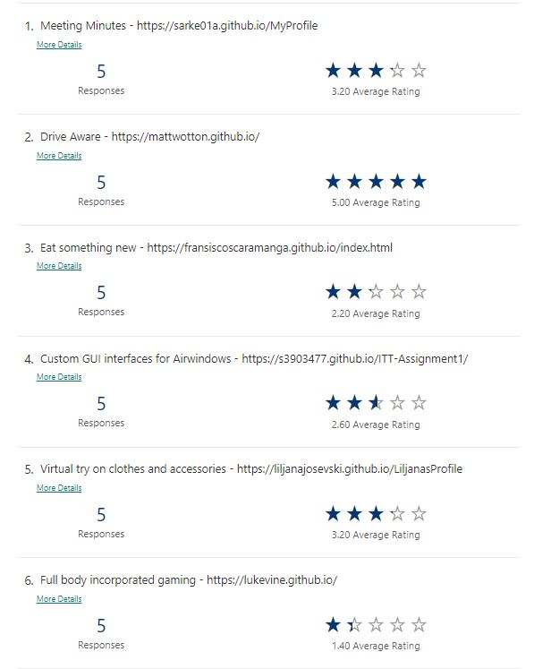
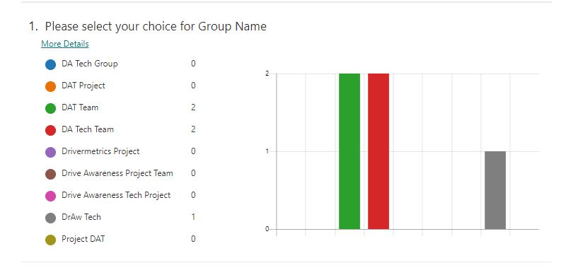
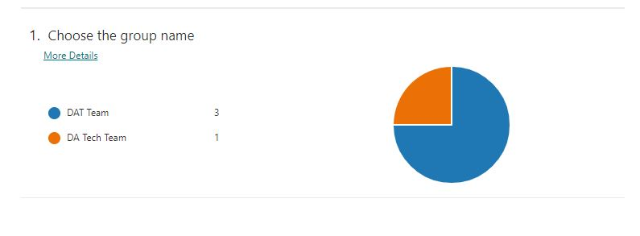

Objective
Requirements of Assignment 2 is to reflect as a group on how well we think we have performed.
All artefacts to be included to show how we have worked as a group and communicated to deliver the final product.
Group formation
One of the requirements of Assignment 2 was to create a group of 4-6 members and to hold two meetings per week.
The initial group creation was formed by email invitations in Canvas.
Once we had the final members, the Microsoft Teams group was created: RMIT Intro to IT - DAT Team Notebook.
The next stage of requirements involved some decision making.
- Meeting day/time to suit all
- Project Idea choice
- Group Name
The most diplomatic way to achieve this seemed to be running polls. These polls were created using Microsoft Forms. The below information is supporting evidence of these polls.
Group decisions
Decision 1 – Meeting Days
Meeting Day Preference => resulting in us choosing Wednesdays & Sundays
Poll Link

Decision 2 – Project Idea choice
Project Idea Selection => resulting in Drive Aware idea from Matthew’s Assignment 1
Poll Link

Decision 3 – Team Name
Team Name => resulting in final team name : The DAT Team
We decided to name our group a name that would be relevant to the Project we chose. The idea behind this was the assumption that in a working environment, teams are usually grouped
by the Project they are working on. Unfortunately, we had to run 2 polls due to a tie.
Poll Link

Poll Link

Once our group had some decisions made, I think it gave us a good foundation to get thinks moving. Meetings were setup and initial agendas were defined.
General Notes and information
After our first meeting, we have figured out that the meeting recordings and transcripts were saved into each meeting chat. This would make it a little harder to collate together for our final submission, so we decided to group all the relevant meeting artefacts into a Teams Notebook: RMIT Intro to IT - DAT Team Notebook. All agendas, actions, transcripts and recordings have been grouped by date for easy access. Once we discovered there was an ability to add tasks and assign to people, that was also included.
Webpage coordination
When we got to the stage of building the webpage, that required a lot more coordination as a team.
There was initially some confusion regarding how to add to Github without messing with other people’s files and we had some challenges with ‘private’ vs ‘public’ permissions –
even when we were collaborators.
The first attempt at Github collaboration was interesting and a bit messy – this was based more on our experience levels and took us a little bit to figure it all out.
Here is our first attempt
Github Repo 1.
We learnt from this that we needed to load the files into the correct folder path and we also learnt how we could accidently overwrite other submissions.
Another lesson learnt was the folder structure.
This version helped us gain a lot of experience but we decided it was best to start afresh to avoid inheriting a mess and confusion. It was also still a bit unclear how branching would work.
This was also the version that allowed us to make a decision on the style of webpage we would like.
Our second attempt was pretty much just a couple of us getting acquainted with Github in a collaborative way and learning how to use branching.
Github Repo- practice.
At this stage, we were still pretty much working with a complicated folder structure and inheriting some of our learning mistakes – still only a couple of us working on this to figure out how it could work.
The final decision was made for one team member with the most knowledge to clean things up and create a new fresh repository.
Github Repo - Final.
There has been some issues along the way with bits and pieces being overwritten or lost so it has added a challenge to the creation of the webpage.
Overall, although we did have some challenges I think we have used the Microsoft Teams chat – 'Drive Aware - Main Chat'.
really well.
We have kept each other informed of our progress and coordinated making changes to global/common files well.
All team members actively participated in the group chat and sharing of documents and information which has made the Assignment 2 submission possible.
Christopher' Reflection
What went well
The team was able to delegate tasks effectively and everyone was willing to do their fair share of work. I was able to reach out to the team when I needed assistance and feedback, and the help I needed was quickly provided.
What could be improved
I think our team did very well considering that we were working as a group of five instead of six. If we had another person to share the workload, I think we would have been able to spend a bit more time on the website design. As the rest of the team weren’t familiar with the Bootstrap framework, I would have liked to have spent some time showing them a little more about it works.
At least one thing that was surprising
I was quite surprised when Liljana mentioned she had a contact who works on autonomous vehicles. It was great to have direct contact with someone who works on such a cutting-edge technology and gaining an insight of their day-to-day duties.
At least one thing that you have learned about groups
In working with the team, I found the regular meetings a good way to keep focused on where we were at with completing our work and what we needed to do to complete the project as a whole. I felt we worked really well together, our collaboration has been a very enjoyable experience.
- Return to top
Nicole's Reflection
What went well
I think we are all very conscientious so were eager to stay on track of our assignment goals. Everyone made an effort to attend the meetings
on time and to participate in the conversations and decision making.
I felt that our personalities seemed to work together as nobody was trying to do more or less work or to be disrespectful to each other.
What could be improved
Each of us has had to work independently but also dependently to coordinate the same work environment. It can be difficult to keep everyone at the same
level/stage of their work. It is also challenging when we all have different schedules and responsibilities.
At times it felt like some were able to progress faster with their tasks than others.
I think some of the tasks could’ve been split into smaller tasks to speed the process up.
Team members could reach out if they need assistance earlier so that they can be more supported.
At least one thing that was surprising
That I really enjoy working on webpages and learning about HTML and CSS.
That Github in theory seems logical but that you still need to coThere is no avoiding it.
At least one thing that you have learned about groups
The key to this whole group project working would have to be communication. Everyone in our team has been very good at communicating so it was a key factor in our ability
to deliver the Assignment by the due date.
I learnt a lot about each team member as we worked together. We have an amazing group of very interesting, knowledgeable and talented members. All with different talents.
- Return to top
Liljana's Reflection
What went well-
I believe we worked really well as a group, it was great using polls to help us in making decisions, we communicate very well through teams and bounce ideas of each other. Team meeting were always fun, and we agree well on tasks. Our team members are always happy to help each other.
What could be improved-
One thing we could improve as a group are, that we needed to be a bit more comunicative because we made a few overrides at the beginning on the GitHub but we quickly learned to use branches and then check for conflicts and communicating through teams to ensure everyone was aware, when we were making changes, and to alert people to download the latest version of the zip file before continuing.
At least one thing that was surprising-
It was surprising to learn that Chris was quite knowledgeable with coding html and CSS. Also, Nicole was leading the group in the meetings, trying to keep them flowing. She was always happy to help if something was difficult to grasp and reassured me that I was not bothering her. Gerard was really good at saying things nicely to keep the group happy. Matthew initiated the group and I am so happy with our team members, as we work really well together.
At least one thing that you have learned about groups-
I have learnt that you always need to be kind and respectful because everyone is trying their best and they have other commitments in life such as kids or fulltime jobs which makes studying difficult sometimes but having an understanding and respect will take you far.
- Return to top
Matthew's Reflection
What went well
Our group dynamic has been amazing to be a part of. Considering we are relative strangers to each other; we have worked as a cohesive unit to get our tasks done. Every idea that was brought forward as part of our discussions was met with openness and I don’t feel like anyone was made to feel any less than anyone else. I found this group to be very inclusive of one another.
What could be improved
Unfortunately, one of our team members didn’t work out, thus leaving us with 5 members rather than the recommended 6. Although I don’t believe this put us at a real disadvantage, but it would have been nice to be able to spread a bit more of the workload around.
At least one thing that was surprising
I was surprised at the fact the rest of the team wanted to pursue the Project Idea that I had come up with, it was a humbling and an exciting event. On a personal level, I surprised myself in my ability to write a report of such detail and length due to my lack of academic experience.
At least one thing that you have learned about groups
From the get-go we ensured we organised specific days and times that our group would meet. This helped to elevate stress and set firm timeframes on any tasks that needed to be completed or reviewed to help us stay on track to submit by the due date. Not only have I learnt the importance of juggling my personal life with study life but also understanding the importance of what is going on in other group members lives and finding that balance to best suit the entire group.
Return to top
Gerard's Reflection
What went well
I think every team member put in the time and effort, that we communicated and shared our work well given that we were relatively new to the platforms used. I think that the team is well balanced, both in terms of skills and personalities and this, combined with determination, has served us well. I feel that the meetings went very well, were enjoyable, that we all contributed well and that they were well structured - credit where it is due to Nicole for that.
What could be improved
As mentioned above, we are gaining experience in the use of some of the skills and applications involved in the project and that, along with not being in the same location has lead to some issues. I would imagine that these issues will become less frequent as we adapt to working in teams as remote individuals. I wonder if tasks had been broken down into smaller parts and reviewed more often by the team if it would have made the project easier for us.
At least one thing that was surprising
How well the group got on in the meetings and the willingness of all of the members to commit considerable time and effort to the project. I was genuinely surprised by how quickly the group dynamic was established and how well it worked. The team members all seemed quick to praise each others work and open to constructive criticism.
At least one thing that you have learned about groups
That many aspects of group meetings that take place between people traditionally, for example people who meet in person in a conference room, also occur with more flexible, remote meetings where the attendees have never met in person. For example, a challenge being identified in a meeting and it being discussed afterwards by some of the team members informally leading to a solution being offered at the next meeting.
- Return to top